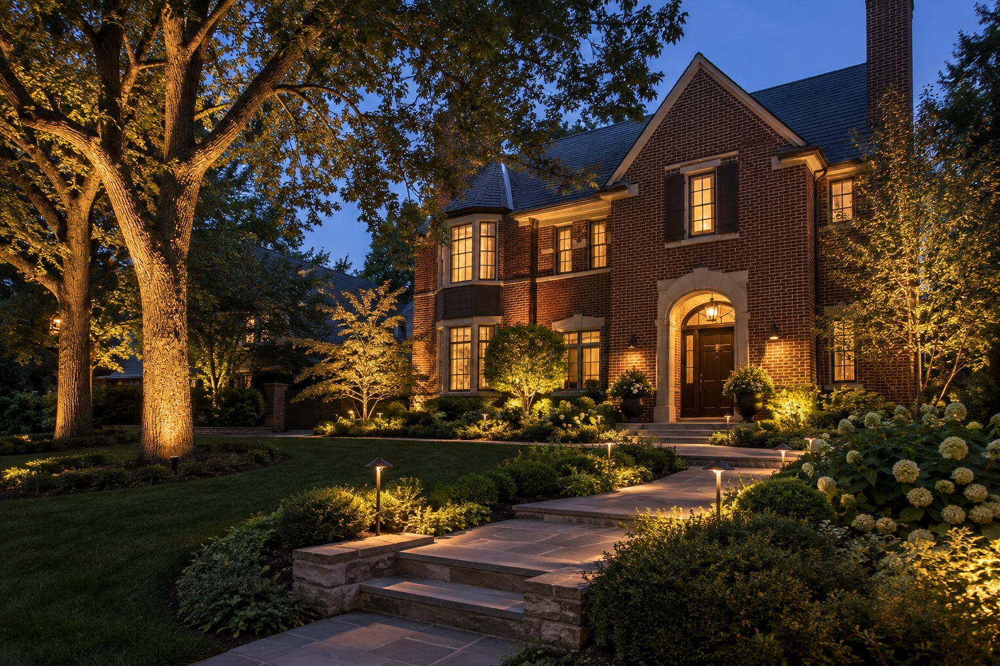
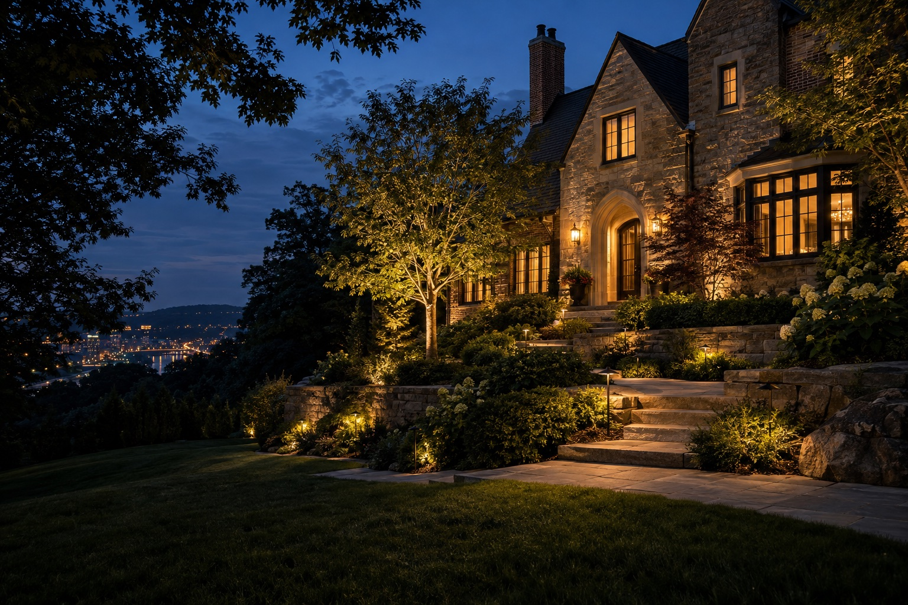

Warm welcome
Facade, trees & entry · illustrative concept
Lighting concepts inspired by the homes, hillsides, and outdoor spaces of Pittsburgh.
These original AI-generated concepts illustrate directions for a future lighting project. They are not photographs of completed Lumascapes work.

Facade, trees & entry · illustrative concept

Pathway, steps & tree canopy · illustrative concept

Patio & landscape accents · illustrative concept

Architectural uplighting · illustrative concept

Terrace, steps & garden · illustrative concept

Architecture & landscape · illustrative concept
Tell us what you have in mind. We would love to talk through the possibilities for your Pittsburgh-area property.
Start a conversation